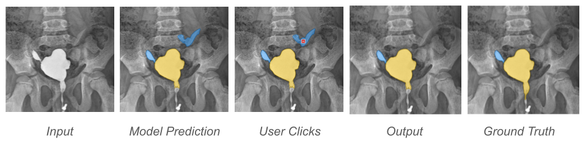
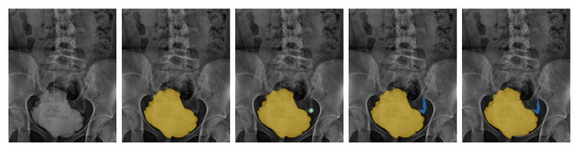
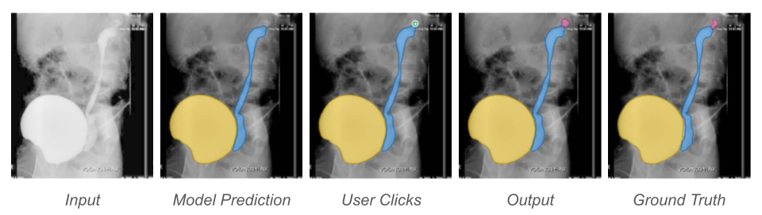
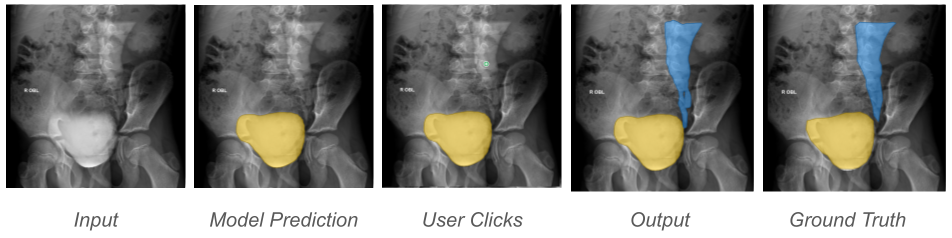
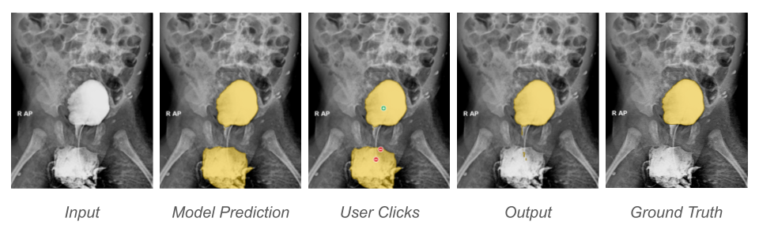
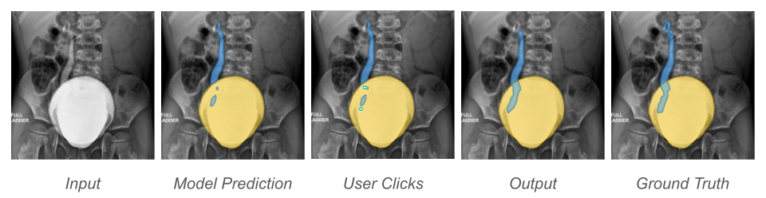
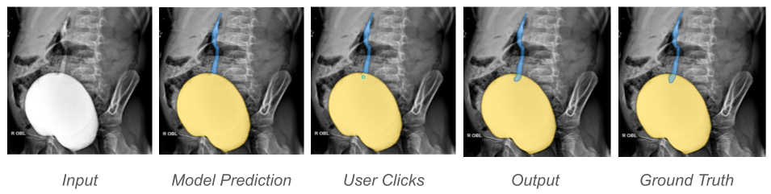

Instance Removal
When the model predicts an incorrect structure, we can remove the instance by suppressing its corresponding active query using a single click.



We use query-based transformer architectures for VCUG segmentation and present a simple interactive way to refine the masks using clicks. For this, we perform optimization over the queries to support three core operations: instance addition, instance removal, and instance editing. We show some examples below.
When the model misses a target structure, we can add the missing instance by optimizing a dormant query using a single click.



When the model predicts an incorrect structure, we can remove the instance by suppressing its corresponding active query using a single click.

We can edit existing masks by using a few positive and negative clicks to optimize their corresponding active queries.


